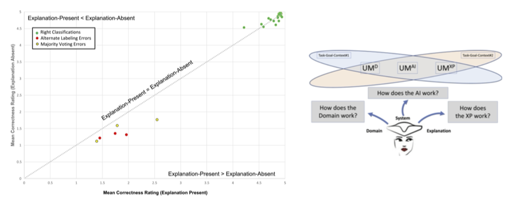
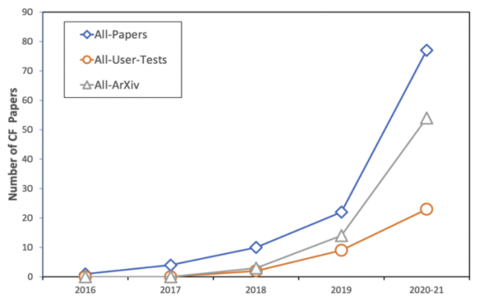
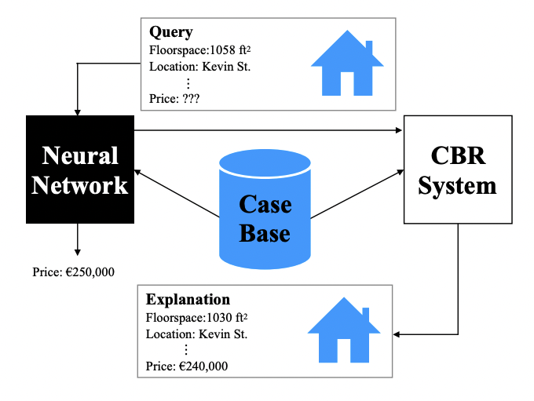

Home
I am an explainable AI reseracher. Previously, I did my Ph.D. at University College Dublin, Ireland. For my undergrad, I completed my Bachelor of Music degree (and Master of Arts in Musicology & Performance) at the University of Maynooth. Currently, I am at MIT primarily researching interpretable deep reinforcement learning for my postdoc.
My research vision is to design interpretable AI systems which reason in the same way humans do, so that we can clearly see what they are doing in a causally faithful way that everyone can understand (not just ML experts). This will help us successfully utilize their abilities in sensitive domains such as medicine, finance, and autonomous vechicles where people with various backgrounds need to interact with the systems.
Specifically, I believe in using exemplar/prototype theory, contrative explanation, and causal reasoning (either in the sense of the world or model) in this process. My strongest contributions to the field have been (1) the introduction of Semi-Factual explanation, and (2) designing the first inherently interpretable Deep RL system.
Above all however, I am a strong advocate for testing these systems on real humans to prove their utility.
Feel free to reach out if you would like to talk.
Towards Interpretable Deep Reinforcement Learning with Human-Friendly Prototypes

TL;DR: We build the first inherently interpretable, general, well performaning, deep reinforcement learning algorithm.
Abstract: Despite recent success of deep learning models in research settings, their application in sensitive domains remains limited because of their opaque decision-making processes. Taking to this challenge, people have proposed various eXplainable AI (XAI) techniques designed to calibrate trust and understandability of black-box models, with the vast majority of work focused on supervised learning. Here, we focus on making an "interpretable-by-design" deep reinforcement learning agent which is forced to use human-friendly prototypes in its decisions, thus making its reasoning process clear. Our proposed method, dubbed Prototype-Wrapper Network (PW-Net), wraps around any neural agent backbone, and results indicate that it does not worsen performance relative to black-box models. Most importantly, we found in a user study that PW-Nets supported better trust calibration and task performance relative to standard interpretability approaches and black-boxes.
Eoin M. Kenny, Mycal Tucker, and Julie A. Shah
[ICLR 2023] * Spotlight Presentation (top 25% of accepted papers)
Explaining Deep Learning using examples: Optimal feature weighting methods for twin systems using post-hoc, explanation-by-example in XAI

TL;DR: We show how the twin-system framework can be used to explain tabular, image, and text data predictions with post-hoc explanation by example..
Abstract: In this paper, the twin-systems approach is reviewed, implemented, and competitively tested as a post-hoc explanation-by-example solution to the eXplainable Artificial Intelligence (XAI) problem. In twin-systems, an opaque artificial neural network (ANN) is explained by “twinning” it with a more interpretable case-based reasoning (CBR) system, by mapping the feature weights from the former to the latter. Extensive comparative tests are performed, over four experiments, to determine the optimal feature-weighting method for such twin-systems. Twin-systems for traditional multilayer perceptron (MLP) networks (MLP–CBR twins), convolutional neural networks (CNNs; CNN–CBR twins), and transformers for NLP (BERT–CBR twins) are examined. In addition, Feature Activation Maps (FAMs) are explored to enhance explainability by providing an additional layer of explanatory insight. The wider implications of this …
Eoin M. Kenny and Mark T. Keane
Explaining black-box classifiers using post-hoc explanations-by-example: The effect of explanations and error-rates in XAI user studies
TL;DR: We find that nearest neighbor exemplar-based explanation lead people to view classifiction errors as being “less incorrect”, moreover they do not improve trust.
Abstract: In this paper, we describe a post-hoc explanation-by-example approach to eXplainable AI (XAI), where a black-box, deep learning system is explained by reference to a more transparent, proxy model (in this situation a case-based reasoner), based on a feature-weighting analysis of the former that is used to find explanatory cases from the latter (as one instance of the so-called Twin Systems approach). A novel method (COLE-HP) for extracting the feature-weights from black-box models is demonstrated for a convolutional neural network (CNN) applied to the MNIST dataset; in which extracted feature-weights are used to find explanatory, nearest-neighbours for test instances. Three user studies are reported examining people's judgements of right and wrong classifications made by this XAI twin-system, in the presence/absence of explanations-by-example and different error-rates (from 3-60%). The judgements gathered include item-level evaluations of both correctness and reasonableness, and system-level evaluations of trust, satisfaction, correctness, and reasonableness. Several proposals are made about the user's mental model in these tasks and how it is impacted by explanations at an item- and system-level. The wider lessons from this work for XAI and its user studies are reviewed.
Eoin M Kenny, Courtney Ford, Molly Quinn, Mark T Keane
On generating plausible counterfactual and semi-factual explanations for deep learning

TL;DR: We introduce the AI world to semi-factuals, and show a plausible way to generate them (and counterfactuals) using a framework called PIECE.
Abstract: There is a growing concern that the recent progress made in AI, especially regarding the predictive competence of deep learning models, will be undermined by a failure to properly explain their operation and outputs. In response to this disquiet, counterfactual explanations have become very popular in eXplainable AI (XAI) due to their asserted computational, psychological, and legal benefits. In contrast however, semi-factuals (which appear to be equally useful) have surprisingly received no attention. Most counterfactual methods address tabular rather than image data, partly because the non-discrete nature of images makes good counterfactuals difficult to define; indeed, generating plausible counterfactual images which lie on the data manifold is also problematic. This paper advances a novel method for generating plausible counterfactuals and semi-factuals for black-box CNN classifiers doing computer vision. The present method, called PlausIble Exceptionality-based Contrastive Explanations (PIECE), modifies all “exceptional” features in a test image to be “normal” from the perspective of the counterfactual class, to generate plausible counterfactual images. Two controlled experiments compare this method to others in the literature, showing that PIECE generates highly plausible counterfactuals (and the best semi-factuals) on several benchmark measures.
Eoin M. Kenny and Mark T. Keane
If only we had better counterfactual explanations: Five key deficits to rectify in the evaluation of counterfactual xai techniques
TL;DR: We highlight the shortcomings in counterfactual XAI research evaluation, and suggest solutions.
Abstract: In recent years, there has been an explosion of AI research on counterfactual explanations as a solution to the problem of eXplainable AI (XAI). These explanations seem to offer technical, psychological and legal benefits over other explanation techniques. We survey 100 distinct counterfactual explanation methods reported in the literature. This survey addresses the extent to which these methods have been adequately evaluated, both psychologically and computationally, and quantifies the shortfalls occurring. For instance, only 21% of these methods have been user tested. Five key deficits in the evaluation of these methods are detailed and a roadmap, with standardised benchmark evaluations, is proposed to resolve the issues arising; issues, that currently effectively block scientific progress in this field.
Mark T Keane, Eoin M Kenny, Eoin Delaney and Barry Smyth
Twin-systems to explain artificial neural networks using case-based reasoning: Comparative tests of feature-weighting methods in ANN-CBR twins for XAI
TL;DR: We propose a new framework for post-hoc explanation-by-example called Twin-Systems, and show it is much better compared to prior work.
Abstract: In this paper, twin-systems are described to address the eXplainable artificial intelligence (XAI) problem, where a black box model is mapped to a white box “twin” that is more interpretable, with both systems using the same dataset. The framework is instantiated by twinning an artificial neural network (ANN; black box) with a case-based reasoning system (CBR; white box), and mapping the feature weights from the former to the latter to find cases that explain the ANN’s outputs. Using a novel evaluation method, the effectiveness of this twin-system approach is demonstrated by showing that nearest neighbor cases can be found to match the ANN predictions for benchmark datasets. Several feature-weighting methods are competitively tested in two experiments, including our novel, contributions-based method (called COLE) that is found to perform best. The tests consider the ”twinning” of traditional multilayer perceptron (MLP) networks and convolutional neural networks (CNN) with CBR systems. For the CNNs trained on image data, qualitative evidence shows that cases provide plausible explanations for the CNN’s classifications.
Eoin M. Kenny and Mark T. Keane